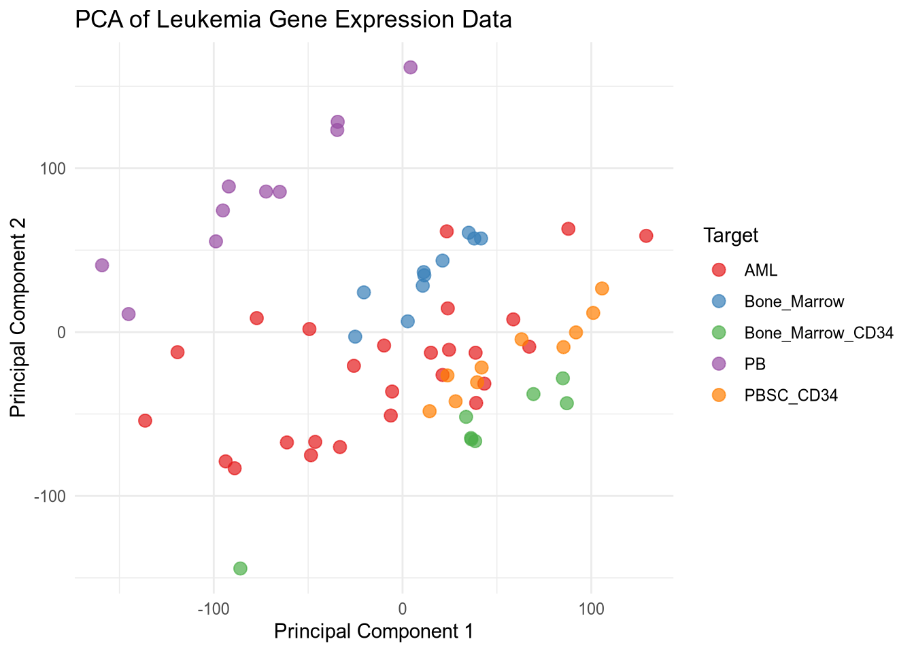

# Importing libraries
library(reticulate)
library(tidyverse)
library(ivo.table)
library(gtsummary)The use of R & Python in data science
A Cross-Language Workflow using R, Python, and Scikit-Learn
Introduction:
The age old debate, which is better, R or Python? The answer is, it depends. Both languages have their strengths and weaknesses, and the best choice for a data scientist will depend on their specific needs and preferences. In this tutorial, we will explore the use of R and Python in data science.
In bioinformatics, we frequently encounter the ‘Curse of Dimensionality’ (the (pn) problem). Here, our dataset contains over 22,000 gene features but only 64 biological samples. Navigating this requires a bilingual approach: using Python’s scikit-learn (Pedregosa et al., 2011) for efficient dimensionality reduction and R’s gtsummary (Sjoberg et al., 2021) for rigorous statistical validation.
Importing libraries, Modules and data:
The first library that needs to be imported, reticulate (Ushey, Allaire and Tang, 2025), is an R package that provides an interface to Python. It allows you to run Python code from R and to use Python libraries in R. The second library, tidyverse (Wickham et al., 2019), is a collection of R packages that are designed for data science. It includes packages for data manipulation, visualization, and modeling.
The python modules that need to be imported are pandas (team, 2020), numpy(Harris et al., 2020), matplotlib.pyplot(Hunter, 2007), and seaborn (Waskom, 2021). Pandas (team, 2020) is a library for data manipulation and analysis. It provides data structures and functions for working with structured data. Numpy (Harris et al., 2020) is a library for numerical computing. It provides functions for working with arrays and matrices. Matplotlib.pyplot (Hunter, 2007) is a library for creating static, animated, and interactive visualizations in Python. Seaborn (Waskom, 2021) is a library for making statistical graphics in Python. It is built on top of matplotlib (Hunter, 2007) and provides a high-level interface for drawing attractive and informative statistical graphics.
# Importing modules
import pandas as pd
import numpy as np
import matplotlib.pyplot as plt
import seaborn as sns
import kagglehub
import os
from kagglehub import KaggleDatasetAdapter
from sklearn.preprocessing import StandardScaler
from sklearn.decomposition import PCA
from sklearn.model_selection import train_test_split
from sklearn.ensemble import RandomForestClassifier
from sklearn.metrics import accuracy_score, classification_reportImport data from kaggle:
Data can be imported from Kaggle using the kagglehub library. The dataset_load() function is used to load a specific file from a Kaggle dataset. The handle of the dataset and the path to the specific file need to be provided as arguments to the function. This method avoids the DeprecationWarning that occurs when using the kaggle library directly.
The ‘magic’ of this workflow lies in the reticulate package (Ushey, Allaire and Tang, 2025). When we load data in a Python chunk, it is stored in the Python memory space. We can then access that exact same data in an R chunk using the py$ prefix (e.g., py$df). This allows for a seamless handover from data processing to statistical reporting without the need to export and re-import CSV files.
Data Availability & Attribution:
This analysis utilizes the Leukemia gene expression dataset from the Curated Microarray Database (CuMiDa). The data was accessed via Kaggle. This dataset is provided under a Creative Commons Attribution-NonCommercial-ShareAlike 4.0 International license.
Python Kaggle Data Loading Code
# 1. Handle name: "user/dataset-slug"
handle = "brunogrisci/leukemia-gene-expression-cumida"
# 2. Specific file: ensure it matches the dataset's content
file_path = "Leukemia_GSE9476.csv"
# Use dataset_load() to avoid the DeprecationWarning
df = kagglehub.dataset_load(
KaggleDatasetAdapter.PANDAS,
handle=handle,
path=file_path
)
rows = len(df)
columns = f'{len(df.columns):,}'
print(f"Data loaded successfully! Shape: {df.shape}")Data loaded successfully! Shape: (64, 22285)The dataset contains 64 samples and 22,285 columns, with the second column being the type of leukemia and the remaining columns representing gene expression levels. The dataset can be explored using the head() function to view the first few rows of the data.
Principal Component Analysis (PCA):
Before building a predictive model, we use Principal Component Analysis (PCA) to project these 22,000+ dimensions into 2D space. This helps us visualize whether the leukemia subtypes—such as AML versus Bone Marrow samples—naturally cluster together. If we see clear separation in the PCA plot, it provides biological confidence that a machine learning classifier will be successful.
Variance explained by top 2 components: 34.22%PCA Plot
pca_data <- py$pca_df
ggplot(pca_data, aes(x = PC1, y = PC2, color = Target)) +
geom_point(size = 3, alpha = 0.7) +
labs(title = "PCA of Leukemia Gene Expression Data",
x = "Principal Component 1",
y = "Principal Component 2") +
theme_minimal() +
scale_color_brewer(palette = 'Set1')
The PCA plot shows the distribution of samples based on the first two principal components. Different colors represent different types of leukemia, allowing for visual assessment of how well the types are separated in the reduced dimensional space. I used reticulate to leverage Python’s robust data manipulation and machine learning libraries while utilizing R’s powerful visualization capabilities to create the PCA plot. This combination allows for efficient data processing and insightful visual representation of the results.
Train-Test Split and Random Forest Classifier:
Python Train-Test Split Code
X_train, X_test, y_train, y_test = train_test_split(X_scaled, y, test_size=0.3, random_state=42, stratify=y)
rf_model = RandomForestClassifier(n_estimators=100, random_state=42)
rf_model.fit(X_train, y_train)RandomForestClassifier(random_state=42)In a Jupyter environment, please rerun this cell to show the HTML representation or trust the notebook.
On GitHub, the HTML representation is unable to render, please try loading this page with nbviewer.org.
Parameters
| n_estimators | 100 | |
| criterion | 'gini' | |
| max_depth | None | |
| min_samples_split | 2 | |
| min_samples_leaf | 1 | |
| min_weight_fraction_leaf | 0.0 | |
| max_features | 'sqrt' | |
| max_leaf_nodes | None | |
| min_impurity_decrease | 0.0 | |
| bootstrap | True | |
| oob_score | False | |
| n_jobs | None | |
| random_state | 42 | |
| verbose | 0 | |
| warm_start | False | |
| class_weight | None | |
| ccp_alpha | 0.0 | |
| max_samples | None | |
| monotonic_cst | None |
Python Train-Test Split Code
y_pred = rf_model.predict(X_test)
accuracy = accuracy_score(y_test, y_pred)
print(f'Random Forest Accuracy: {accuracy:.2%}')Random Forest Accuracy: 95.00%In the code above, we use the stratify=y parameter during our split. In clinical datasets, class labels are often unbalanced. Stratification ensures that our training and testing sets maintain the same proportion of leukemia subtypes as the original dataset, preventing the model from becoming biased toward the most common class.
Classification Report Table
py$df %>%
select(type) %>%
ivo_table()type | ||||
|---|---|---|---|---|
AML | Bone_Marrow | Bone_Marrow_CD34 | PB | PBSC_CD34 |
26 | 10 | 8 | 10 | 10 |
Summary Code
py$df %>%
select(type, 1:5) %>%
tbl_summary(by = type) %>%
add_p() %>%
bold_labels()| Characteristic | AML N = 261 |
Bone_Marrow N = 101 |
Bone_Marrow_CD34 N = 81 |
PB N = 101 |
PBSC_CD34 N = 101 |
p-value2 |
|---|---|---|---|---|---|---|
| samples | 32 (25, 38) | 7 (4, 9) | 15 (13, 17) | 50 (47, 52) | 60 (57, 62) | <0.001 |
| 1007_s_at | 7.86 (7.66, 7.97) | 7.80 (7.72, 7.88) | 7.81 (7.76, 8.05) | 7.81 (7.68, 7.90) | 7.84 (7.73, 7.92) | 0.8 |
| 1053_at | 6.59 (6.40, 6.93) | 6.76 (6.54, 6.78) | 7.32 (7.06, 7.68) | 6.47 (6.33, 6.54) | 6.84 (6.69, 6.90) | <0.001 |
| 117_at | 6.79 (6.67, 7.12) | 6.66 (6.62, 6.76) | 8.09 (6.92, 10.80) | 9.26 (9.06, 9.35) | 6.62 (6.51, 6.71) | <0.001 |
| 1 Median (Q1, Q3) | ||||||
| 2 Kruskal-Wallis rank sum test | ||||||
Table 2 utilizes R’s gtsummary to perform a Kruskal-Wallis rank sum test across the different groups. While our Random Forest model focuses on prediction, this table provides the statistical evidence for individual gene significance. For instance, genes with a p-value < 0.001 are likely key drivers in the differentiation of these leukemia subtypes.
Conclusion:
By combining R and Python within a single Quarto document, we’ve created a reproducible research pipeline. This workflow leverages Python’s speed for heavy-duty computation (PCA, Random Forest) and R’s superior ecosystem for publication-quality tables and bio-statistical testing. This ‘bilingual’ proficiency is a critical skill for modern bioinformaticians working with complex, high-dimensional genomic data.
License & Reuse
This tutorial and the accompanying code are licensed under a Creative Commons Attribution 4.0 International License (CC BY 4.0). You are free to share and adapt this material for any purpose, even commercially, as long as appropriate credit is given.
References:
Harris, C.R., Millman, K.J., Walt, S.J. van der, Gommers, R., Virtanen, P., Cournapeau, D., Wieser, E., Taylor, J., Berg, S., Smith, N.J., Kern, R., Picus, M., Hoyer, S., Kerkwijk, M.H. van, Brett, M., Haldane, A., Río, J.F. del, Wiebe, M., Peterson, P., Gérard-Marchant, P., Sheppard, K., Reddy, T., Weckesser, W., Abbasi, H., Gohlke, C. and Oliphant, T.E., 2020. Array programming with NumPy. Nature, [online] 585(7825), pp.357–362. https://doi.org/10.1038/s41586-020-2649-2.
Hunter, J.D., 2007. Matplotlib: A 2D graphics environment. Computing in Science & Engineering, 9(3), pp.90–95. https://doi.org/10.1109/MCSE.2007.55.
Pedregosa, F., Varoquaux, G., Gramfort, A., Michel, V., Thirion, B., Grisel, O., Blondel, M., Prettenhofer, P., Weiss, R., Dubourg, V., Vanderplas, J., Passos, A., Cournapeau, D., Brucher, M., Perrot, M. and Duchesnay, E., 2011. Scikit-learn: Machine learning in Python. Journal of Machine Learning Research, 12, pp.2825–2830.
Sjoberg, D.D., Whiting, K., Curry, M., Lavery, J.A. and Larmarange, J., 2021. Reproducible summary tables with the gtsummary package. The R Journal, [online] 13, pp.570–580. https://doi.org/10.32614/RJ-2021-053.
team, T. pandas development, 2020. Pandas-dev/pandas: pandas. https://doi.org/10.5281/zenodo.3509134.
Ushey, K., Allaire, J. and Tang, Y., 2025. Reticulate: Interface to ’python’. [online] Available at: <https://rstudio.github.io/reticulate/>.
Waskom, M.L., 2021. Seaborn: Statistical data visualization. Journal of Open Source Software, [online] 6(60), p.3021. https://doi.org/10.21105/joss.03021.
Wickham, H., Averick, M., Bryan, J., Chang, W., McGowan, L.D., François, R., Grolemund, G., Hayes, A., Henry, L., Hester, J., Kuhn, M., Pedersen, T.L., Miller, E., Bache, S.M., Müller, K., Ooms, J., Robinson, D., Seidel, D.P., Spinu, V., Takahashi, K., Vaughan, D., Wilke, C., Woo, K. and Yutani, H., 2019. Welcome to the tidyverse. Journal of Open Source Software, 4(43), p.1686. https://doi.org/10.21105/joss.01686.
Reuse
CC BY-NC-SA 4.0(View License)
Citation
BibTeX citation:
@online{allies2026,
author = {Allies, Devon},
title = {The Use of {R} \& {Python} in Data Science},
date = {2026-02-08},
langid = {en}
}
For attribution, please cite this work as:
Allies, D., 2026. The use of R & Python in data science.